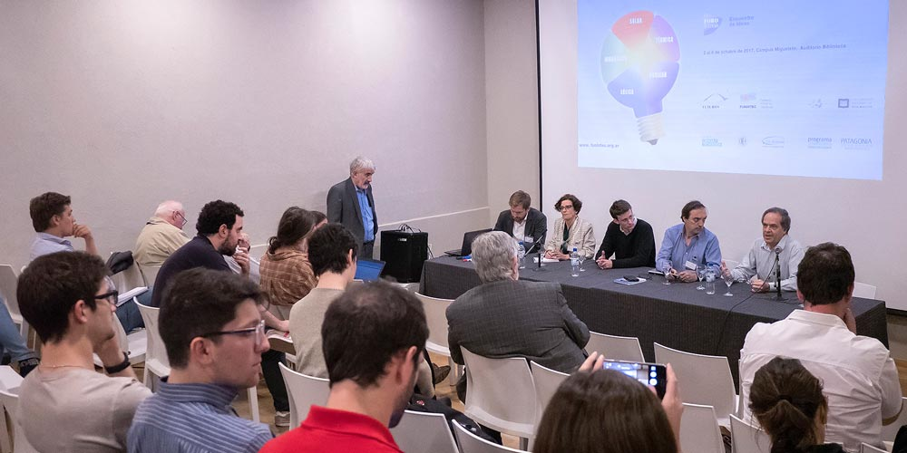

El workshop FUTUROS ENERGÍA promovió la reflexión y el debate sobre la situación actual y futura de la energía en el mundo y especialmente en Latinoamérica y Argentina, atendiendo a las relaciones, impacto y alcance de la tecnología en la problemática.
Los temas de FUTUROS ENERGÍA fueron:
- La matriz energética a escala mundial y regional
- Eficiencia energética y uso racional
- Aprovechamiento de recursos convencionales y no convencionales de gas y petróleo
- El futuro de las tecnologías convencionales
- Generación hidroeléctrica de energía
- El futuro de la energía nuclear
- El futuro y tecnologías de fuentes de energía renovables
- La generación distribuida
- Energía y cambio climático
- Planificación y gestión de la energía
- Escenarios para una matriz energética sostenible
Conocé a los expositores de Futuros Energía 2017.
